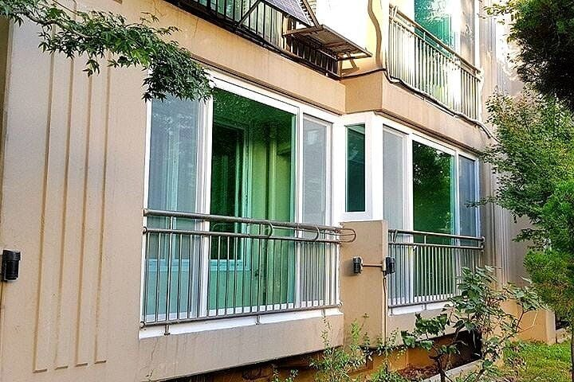
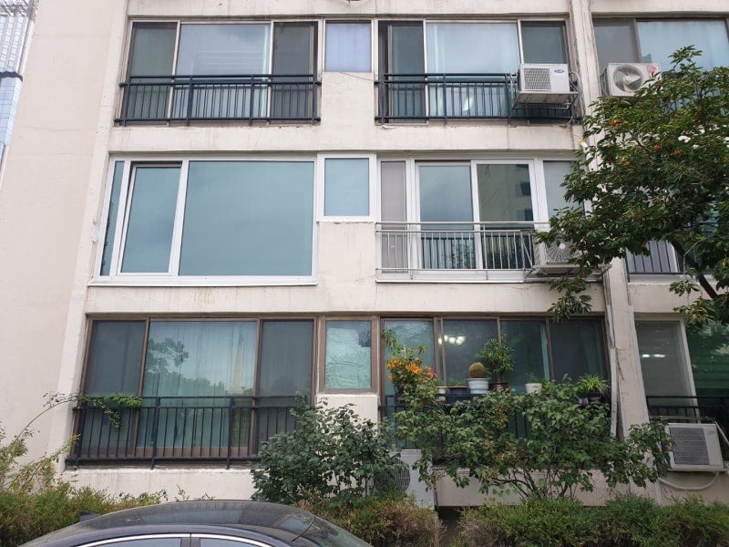

아파트 1층
단점 : 사생활 보호 잘 안됨, 벌레 많음, 소음 심함, 채광 잘 안됨
장점 : 이동 개편함, 층간소음 걱정 적음. 휠체어있는 집이나 아이들, 노인들 있는 집들이 구매하려고 해서 2층보다 수요는 있음.

아파트 2층
단점 : 역시 사생활 보호 잘 안됨, 벌레 많음, 소음 심함, 채광 잘 안됨. 1층보다 확실한 매수 수요가 잘 없음
장점 : 1층만큼은 아니지만 이동 개편함, 그래도 바닥에 바로 붙어있는 1층보다는 위에 있어 사생활 보호가 좀 더 되고 벌레나 소음 채광도 그나마 좀더 남
같은 가격이면
아파트 1층과 2층 어디를 매매?
2층 낫배드임